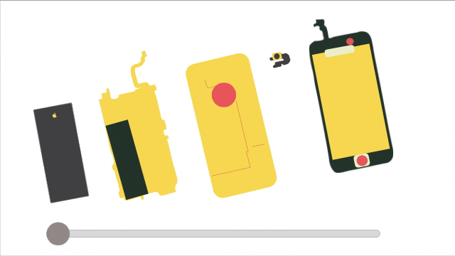
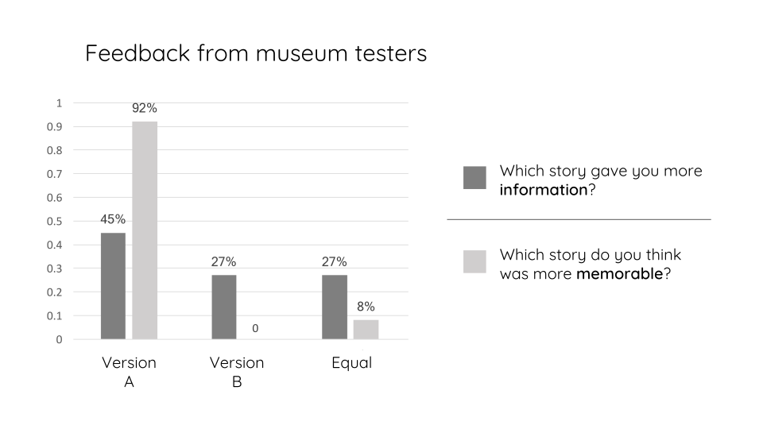
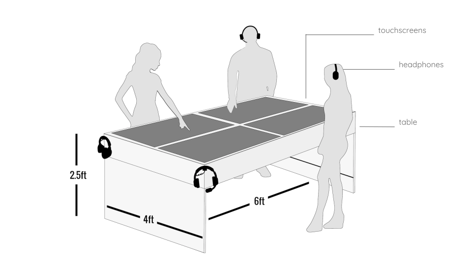
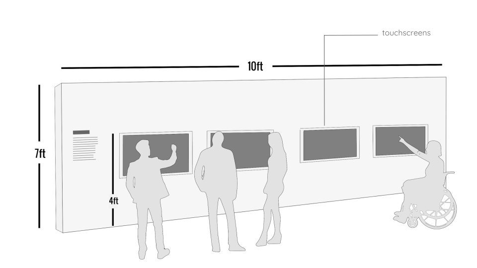

Quest
Description
During the Fall 2017 semester at Parsons school of Design, I participated in a collaborative class about rapid museum prototyping. My classmates and I worked with curators at The Smithsonian Museum of Natural History, where they were developing ideas for a new exhibition about cellular phones titled "Unseen connections". Placed in teams, we then spent three months building quick prototypes of potential exhibition products and presenting them to the museum staff for feedback.For our final prototype idea, my classmates and I set up working demos at the museum’s location in Washington D.C. Regular museum goers were encourage to test out our betas and answer a quick survey on usability afterwards for case study purposes. For our final concept, my team created “Quest”. The prototype told a global story of where the components of our phones are created, and provide a narrative about the people who make cell phones.
Roles
Team
Concept
How can we tell a global story of where the components of our phones are created and provide a narrative about the people who make cell phones?Prototype 1
Version A
Create a map with images of people who work on a specific phone component. When a person's image is clicked, a pop up will show information such as: the name of the worker, where they are from, what piece they make, and their salary. A short interview video following the day of the worker will also be included for each person on the map.
Version B
Start with a collapsable smart phone. Clicking on each component would highlight a location on the map in which the user could click on to learn more information about it.

Goals and Learning Value
User Testing At The Museum
Using two computer monitors, my team set up demos of our two prototype aproaches at the museum entrance. Volunteers tested the product by clicking through each map and watching the informational video that came with it. Users were then asked questions regarding their previous knowledge of what their phones where made of and who makes them. Try our online demo here.
Each person on the map will have an accompanying interview video like the one below:
User Testing Results
Exhibit Product Mockups
Option 1

Option 2

Next Steps
Software